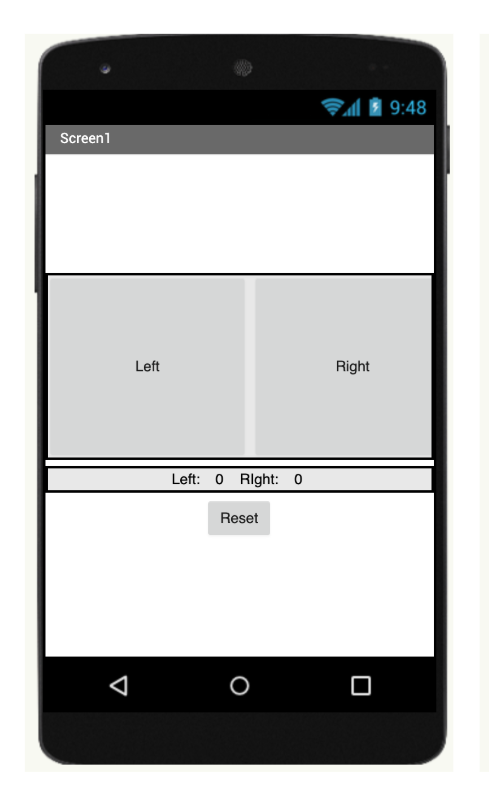
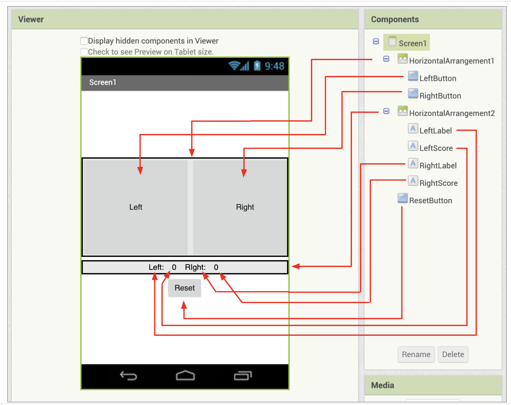
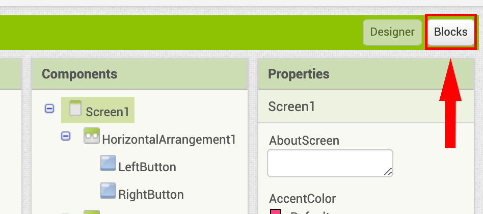
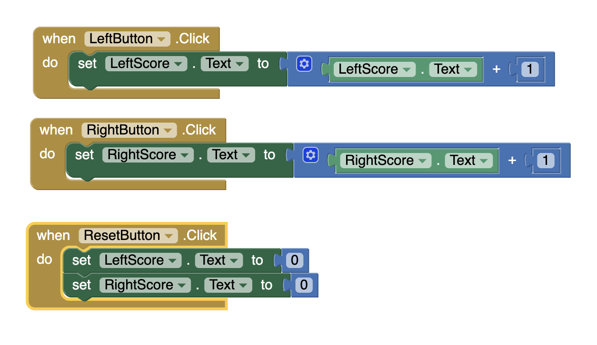
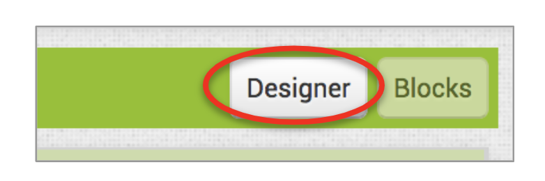

Introduction
In this unit you will become familiar with the MIT App Inventor platform, by running a simple app called the Two Button Game, and making some User Interface changes, as well as coding changes to the app.
First, make sure your mobile device is set up for real time testing, or using the on-screen emulator. You can set up your computer to use App Inventor by clicking on the Setup your Computer tab below. Then proceed to the Two Button Game tab to learn more about the App Inventor platform.
Setup your Computer
Two Button Game
Introduction
This is your first app to learn some of the features of App Inventor. The user interface for the app has been made for you, so you can see how to run and test an app with App Inventor.
Take a moment to look at the Viewer, where the layout of the app is presented. You can see the list of all the components in the Components panel.
In the User Interface, you should see HorizontalArrangements, which allow you to place two components next to each other. Components normally would be placed vertically.
There are also Labels, to display text, and three Buttons (Left, Right, and Reset), which the user can press to interact with the app.
Run the App
Start the MIT AI Companion app on your mobile device (if you are testing with a mobile device).

Then under the Connect menu, choose AI Companion.

Then on the Companion app, press the blue button and scan the QR code.

If you are using the Emulator, then choose Emulator under the Connect menu.
You should see the UI appear on your mobile device, or in the emulator. Try pressing the Left and Right buttons. What happens?
Blocks Editor
Click on the Blocks button in the upper right corner of the screen to switch to the Blocks Editor, where you can code your app.
Check out the code blocks already provided for you. Can you figure out what they are doing?
LeftButton.Click, RightButton.Click, and ResetButton.Click are Event Handler blocks, which means they are triggered when an event, in this case a button click, occurs, and it tells the app what to do when that event happens.
For LeftButton and RightButton, each button click increases the value that is diplayed in the corresponding label.
ResetButton.Click resets both scores for the two buttons back to zero.
Update the User Interface
Now it's time for you to try changing some features of the app.
Switch back to the Designer by clicking on the Designer button in the upper right corner of the screen.
In the Designer, click on LeftButton in the Components panel and change the properties as follows:
- BackgroundColor: any color you like
- Shape: rounded
You should see your changes reflected on your mobile device or in the emulator. LeftButton's color and shape should change.
Do the same for RightButton. You should see it change on your mobile device too.
Now try changing ResetButton. For example, how might you make it larger?
Update the Code Blocks
Now try changing the code by first switching back to the Blocks Editor..
Update the LeftButton.Click and RightButton.Click blocks. Change the number that is added to any number other than 1.

Then try pressing the buttons on your mobile device or in the emulator. The score for each button should increase by the number you typed.
What else can you change?
This is just to give you a taste of how the App Inventor platform works. But feel free to try to change other things about your app. Update some of the other properties and code blocks. You won't break anything, so explore!
Next, you'll make your own app from scratch, the Hello It's Me app.